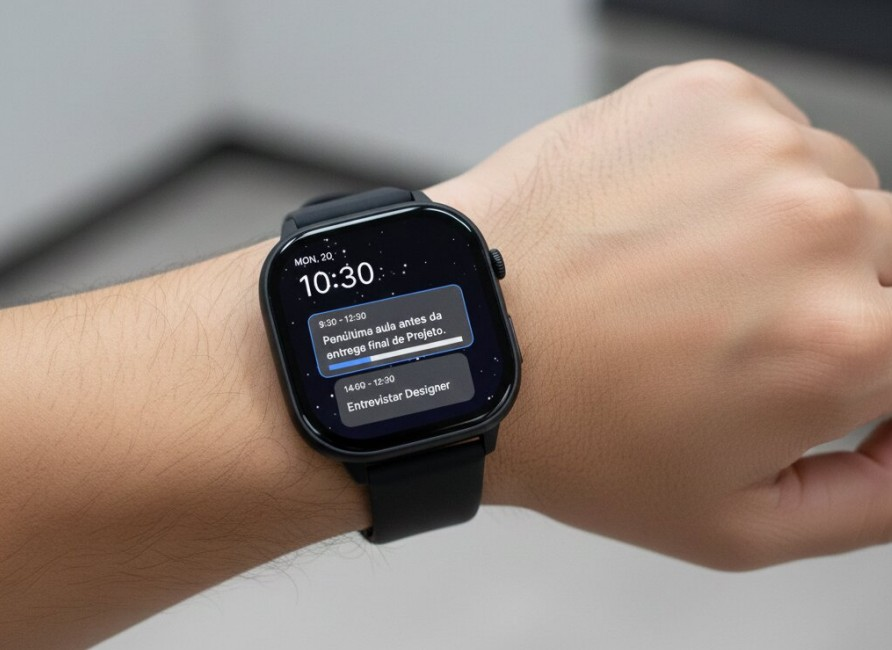
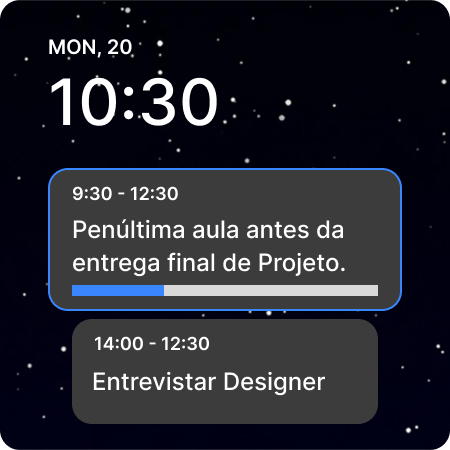
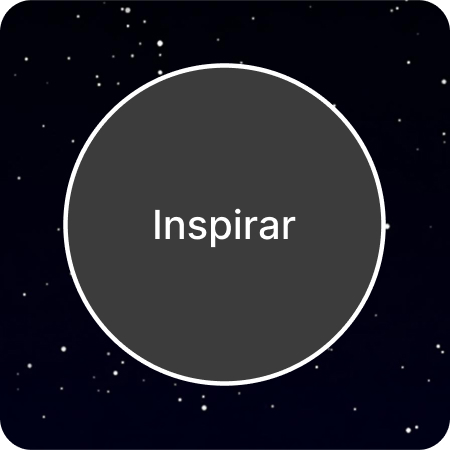
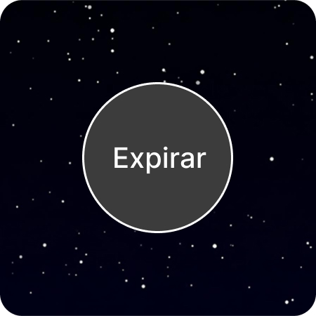
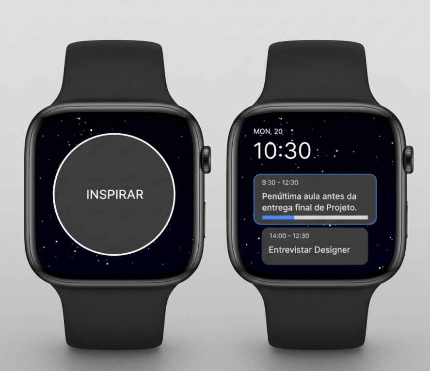

Interactive Watch Face
An interactive smartwatch interface designed in Figma and developed with p5.js, combining user-centred design, animation and creative coding to improve the user experience.

Overview
This project focused on designing and developing an interactive smartwatch watch face. The process began in Figma, where the interface and user flow were designed, and continued in p5.js, transforming the visual prototype into a functional interactive experience.
Role
UX/UI Design
Interaction Design
Creative Coding
Software
Figma
p5.js
The Challenge
The objective was to design a smartwatch interface that was both visually appealing and functional within the limited screen size. The challenge involved translating a static Figma prototype into an interactive application using JavaScript and p5.js while maintaining clarity, usability and smooth animations.



The Solution
The interface was first designed and prototyped in Figma, defining the layout, colours, typography and interactions. Afterwards, the project was recreated using p5.js, where animations, simulated data and user interactions were implemented to create a functional smartwatch watch face.
